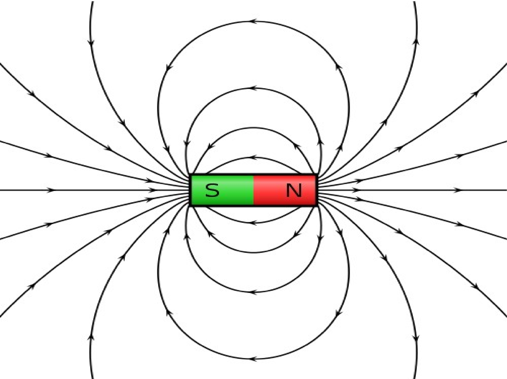
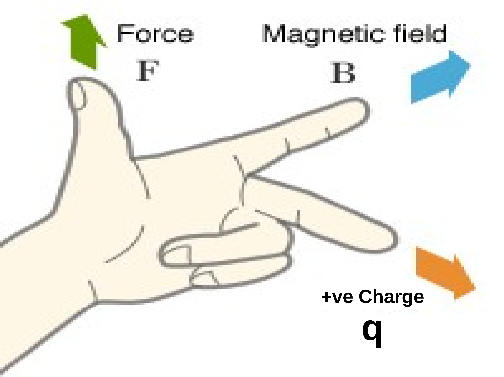
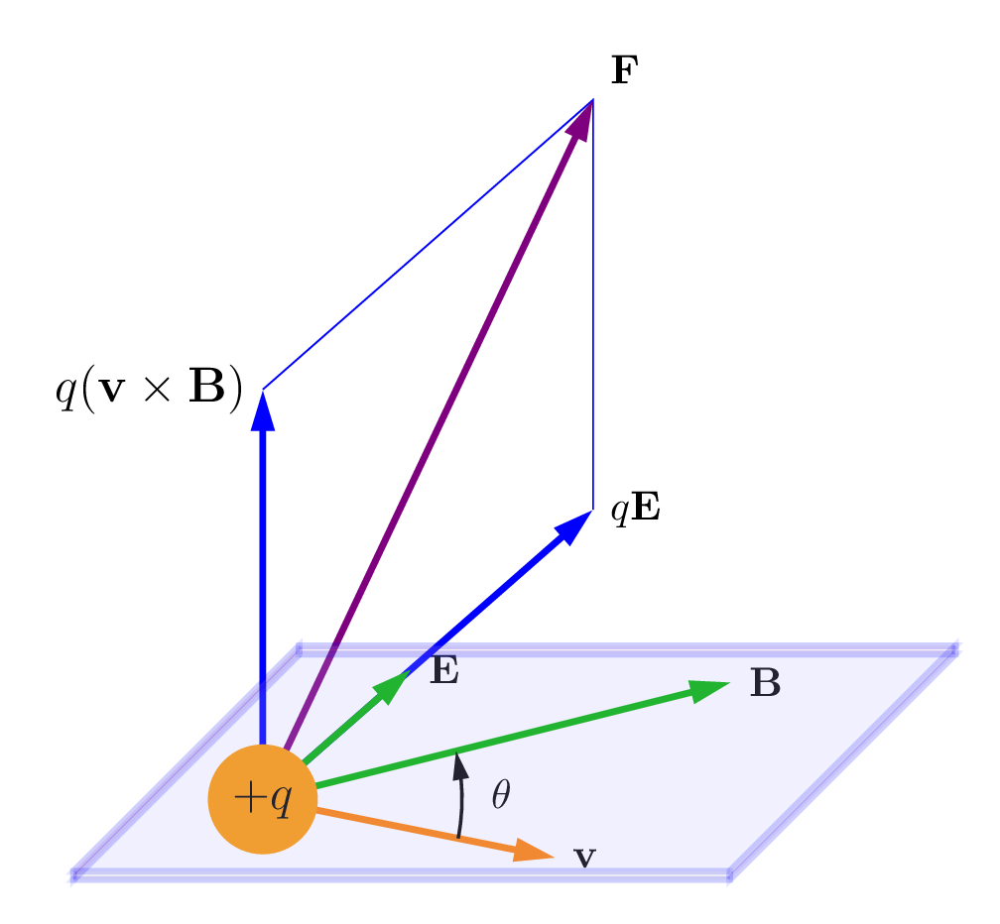
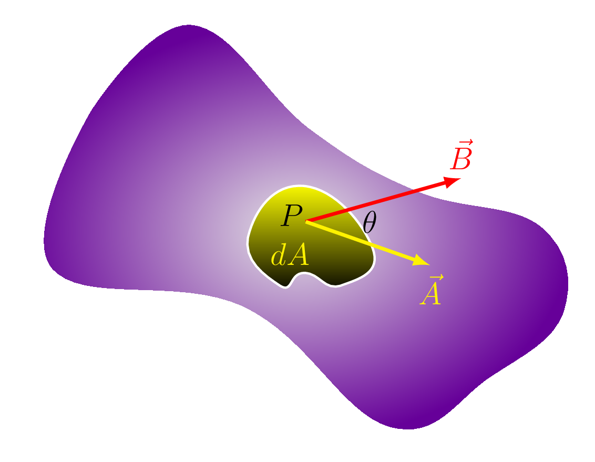
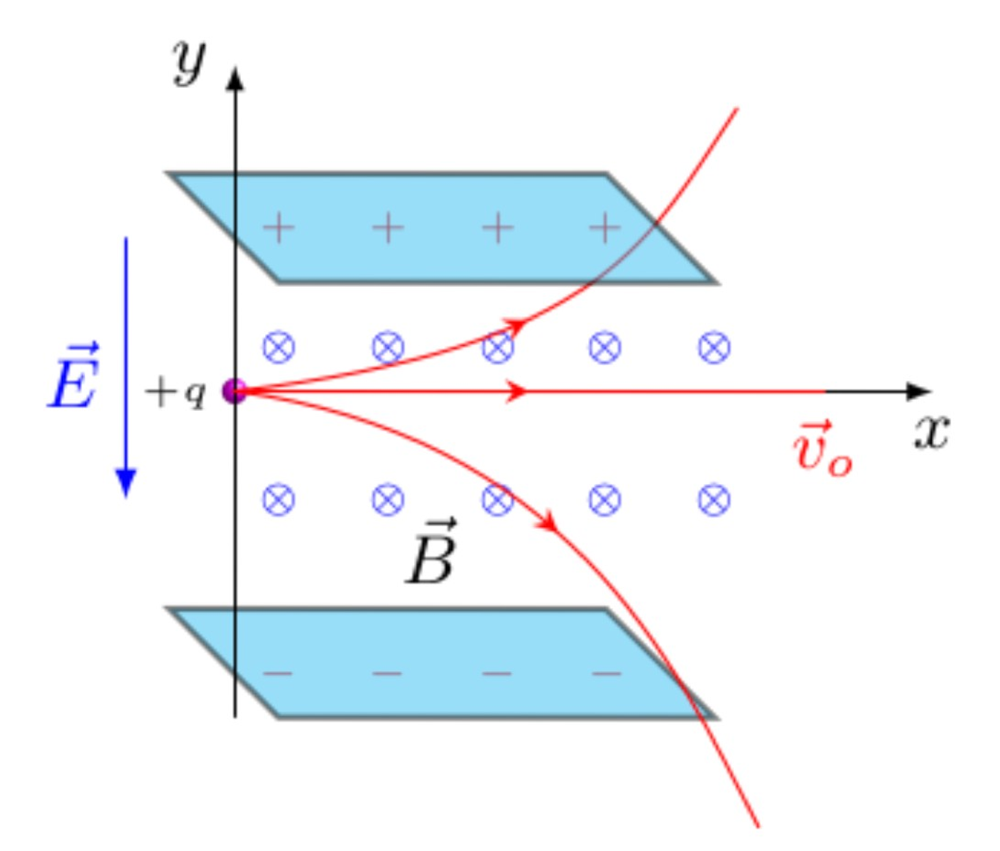
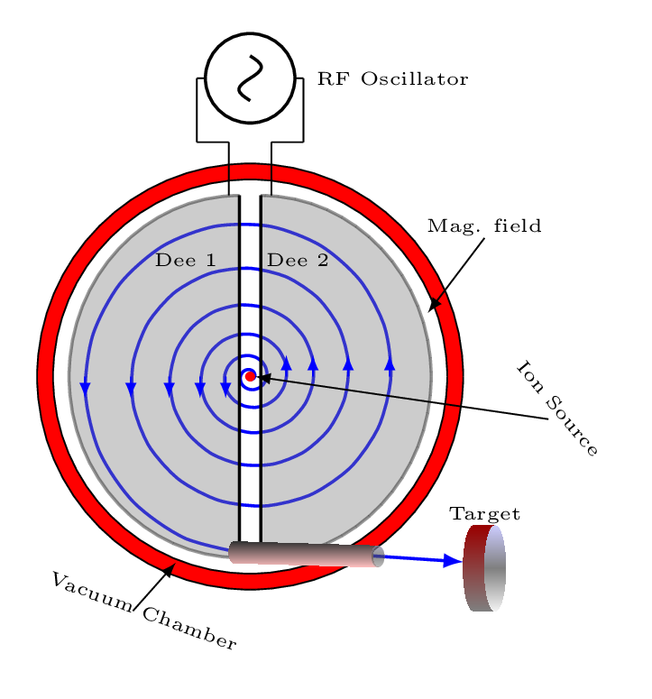
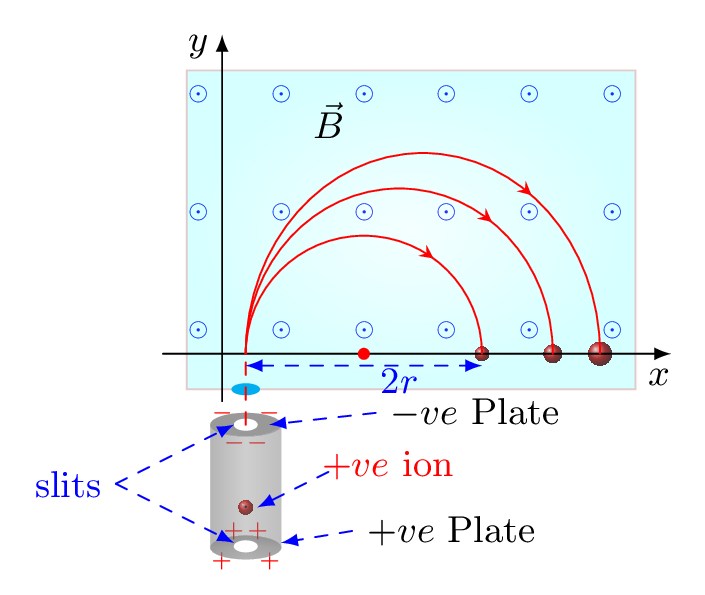
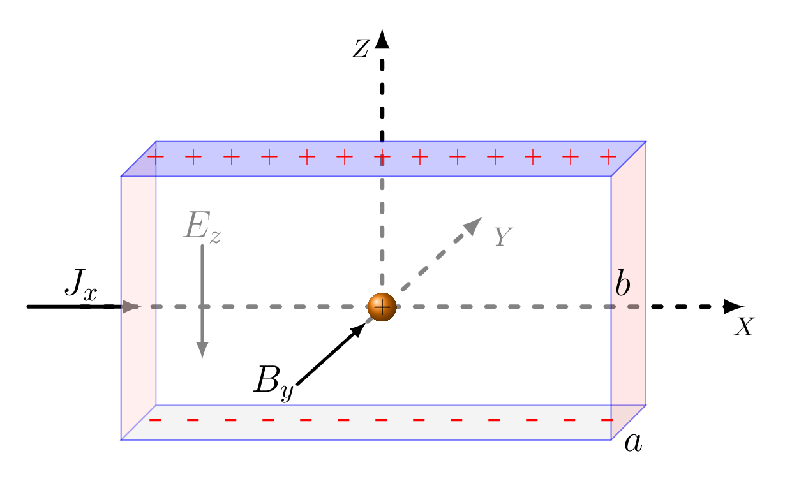

Section 3.1 Magnetic Field
Magnetic Field: It is a region of space around a magnet or moving charges where magnetic effects can be experienced. [The changing electric field can also creates magnetic field and vise a versa.] It is a vector quantity. Its magnitude depends upon the density of magnetic field lines and direction depends upon the direction of magnetic line at that particular point. The CGS unit of magnetic field is \(Gauss\) and SI unit is \(Tesla\) (T).
\begin{equation*}
1 \,Gauss = 1\times10^{-4}\,Tesla;
\end{equation*}
the other unit of magnetic field \(\vec{B}\) is (\(Tesla = T = W_{b}/m^{2} = N/A.m\))

Magnetic field lines are an imaginary path along which a unit north pole could move freely if it is alowed to do so. Magnetic lines are always pointed away from north pole and towards a south pole of a magnet as shown in Figure 3.1.1. The properties of magnetic field lines can be summarized as:
-
The direction of magnetic field is tangent to the field line at any point in space. A small compass needle will point in the direction of the field line.
-
The strength of the field is proportional to the density of the lines. It is exactly proportional to the number of lines per unit area perpendicular to the lines. Hence the field is stronger near the poles and weeker at far points.
-
Magnetic field lines can never cross each other, i.e., the field has a unique direction at any point in space.
-
Magnetic field lines are continuous, forming closed loops without beginning or end. They go from the north pole to the south pole to the north pole again.
The north and south poles of a magnet can never be separated. It is a distinct difference from electric field lines, which begin on the positive and end on negative charges.
Magnetic Dipole: When two equal but opposite magnetic poles are separated by a small distance it is called a magnetic dipole. Since magnetic monopoles do not exist it can better be defined in the form of a current loop. The orbiting or spinning electron forms a current loop which generates a magnetic field called a magnetic dipole and its strength is called a magnetic dipole moment, \(\mu= IA,\) where I is a current and A is area of the loop as shown in Figure 3.1.2.(a). It is a vector quantity which is used to measure the tendency of an object to interact with an external magnetic field. The direction of dipole moment is described by right hand thumb rule. If four fingers of right hand are curled up in a direction of current then thumb pointed in the direction of dipole moment. When there are unpaired electrons in an orbital of an atom their spin moments do not cancel out and give rise to overall magnetic moment of the material. As the single electrons are added the spin moments are combined and the resultant spin moments of the atom increases and become maximum when the outer shell is half filled. Spin moments decreases as further electrons are added to the outer-shell until it is completely filled. The magnetic field around a current loop is shown in Figure 3.1.2.(b). The direction and magnitude of field (lines) depend upon the position of point of consideration from the center of the current loop. Field is perpendicular to the plane of loop at its center.
Magnetic Poles: In a current loop, if arrows draw on the legs of letter N follow the direction of current then this plane surface of the loop behaves as a North Pole and if it follows arrows on letter S then it behaves like a South Pole as ashown in Figure 3.1.2.(c) and Figure 3.1.2.(d).
Most of the forces a magnet exerts comes from its ends. Hence magnet possesses two poles at its two ends. If a magnet is pivoted at its center in such a way that it can swing freely, then it always comes to at rest by pointing one of its ends towards north and the other towards south direction. The north-pointing end is called a North-Seeking or N pole and the south-pointing end is called S Pole or South-Seeking. Like poles repel and unlike poles attract. North and south poles always exist in pairs (there are no magnetic monopoles in nature), so if one were to split a permanent magnet in half, two smaller magnets would be created, each with a north pole and south pole. Even if one cut a magnet into pieces all the way down to a single atom they still get a N pole and a S pole because of orbiting electron as shown in Figure 3.1.3.(a). There is no such thing as a single free magnetic pole.
A bar magnet can be considered as composed of many tiny current loops. The currents on the loop around the periphery of a bar magnet at each cross-sectional plane survive producing a resultant current around the outer surface whereas inner currents cancel out one another within the cross-sectional plane. Hence the cause of any magnet is intrinsic current loop around the outer surface of a magnet. Since many atoms of a bar magnet alligned in a same direction when exposed the magentic material into an external field there always exists a N-pole and a S-pole as shown in Figure 3.1.3.(b).
Subsection 3.1.1 Magnetic Materials
The orbital and spin motion of electrons or the interaction of one electron to the other is the origin of magnetism of any materials. Hence all most all materials display magnetic behaviors. On the basis of magnetic behaviors there are three types of materials. They are
-
Ferromagnetic,
-
Paramagnetic, and
-
Diamagnetic.
However, there are three other types of magnetic behaviors also found in nature they are ferrimagnetic, antiferromagnetic, and superparamagnetic which are not the part of discussion here.
Subsubsection 3.1.1.1 Ferromagnetic Material:
It has a very strong magnetization. Magnetization is a physical process of being magnetized when a material is subjected to an external magnetic field. The atomic dipole moments are very strong in these type of materials. Most permanent magnets are ferromagnetic materials such as iron, cobalt, nickel, and gadolinium. Transition metals and some rare earth metals exhibits ferromagnetic behavior. Unpaired electrons spins in partially filled orbitals gives rise to a local magnetic moment. Actually, unpaired electrons containing atoms are very close to each other (and hence there is strong exchange interactions between them) which creates domains in the crystal structure that have the same direction supporting each other. In ferromagnetic materials magnetic dipoles are aligned in a specific direction in a small group within the materials called a domain. The direction of dipole moments vary from one domain to another which cancels the effect of one another and material does not show any intrinsic specific magnetic behavior. But as the material is exposed to an external magnetic field dipole moments of all domains aligned in the direction of external magnetic field and material behaves like a magnet. Once the dipoles aligned in one direction they retain in the same direction even after removal of external field. Hence the permanent magnets are made out of ferromagnetic materials. Bar magnet, horse shoe magnet, disc magnet, Figure 3.1.4.(a). are some examples of permanent magnets. Figure 3.1.4.(b) is an electromagnet whose core is often made from ferromagnetic material.
Subsubsection 3.1.1.2 Paramagnetic Material:
It has a week atomic dipole moment. Unpaired electrons in a partially filled orbitals give rise to a net magnetic moment of atoms but due to thermal agitation the resultant magnetic moment of the materials is zero and hence show no magnetic behavior on its own. Aluminum, magnesium, tungsten, and titanium are some examples of paramagnetic materials. Unpaired electrons in a paramagnetic material are relatively far away from each other hence the exchange interaction is very weak and can not creates any domain. The magnetic moments of such atoms are oriented in random direction and they cancel out each other effect. When subjected to an external magnetic field magnetic moment of the material however, align in a direction to the external filed and starts showing net magnetization. Again, magnetization becomes zero with the removal of external field.
Subsubsection 3.1.1.3 Diamagnetic Material:
This type of materials are composed of atoms that do not possess any net magnetic moments i.e., all the orbitals of atoms are filled and there are no unpaired electrons. Bismuth, copper, lead, mercury, silver, gold, tin, diamond, water, and graphite are some examples of diamagnetic materials. However, when subject to an external field dipole moments induced in a material opposite to external field. Hence diamagnetic materials are deflected away from the magnetic field. The magnetization of such materials becomes zero after removal of external fields.
Subsection 3.1.2 Geomagnetism
Geomagnetism is the study of the dynamics of the Earth’s magnetic field, which is produced in the inner core. The Earth’s magnetic field is predominantly a geo-axial dipole, with north and south magnetic poles located near the \(10^{o}\) from the geographic poles that undergo periodic reversals and excursions. The Earth’s magnetic field is attributed to a dynamo effect of circulating electric current, but it is not constant in direction. Rock specimens of different ages in similar locations have different directions of permanent magnetization. The circulating electric currents in the Earth’s molten metallic core are the cause of the earth’s magnetic field. Convection drives the outer-core fluid and it circulates relative to the earth. This means the electrically conducting material moves relative to the earth’s magnetic field. If it can obtain a charge by some interaction like friction between layers, an effective current loop could be produced. The magnetic field of a current loop could sustain the magnetic dipole type field of the earth [Figure 3.1.5.(a)]. The magnitude of magnetic field at the surface of the Earth is about half a Gauss and dips toward the Earth in the northern hemisphere. The magnitude varies over the surface of the Earth in the range 0.3 to 0.6 Gauss.
-
Magnetic Meridian: An imaginary vertical plane passing through the axis of a freely suspended magnet is called a magnetic meridian. The direction of Earth’s magnetic field lies in the magnetic meridian may or may not be horizontal. The vertical plane passing through the geographical axis of Earth is called geographical meridian [Figure 3.1.5.(b)]. The angle between the magnetic meridian and the geographic meridian at a place is called a magnetic declination, D at that place. At equator it is zero since field is parallel to the earth surface and is maximum at poles. The declination is expressed in degrees East \((^{o} E)\) or degrees West \((^{o} W).\) For example a declination of \(2^{o} E\) means the compass will point 2 degrees east of true geographical North. Thus, the knowledge of declination at a place helps in finding the true geographical directions at that place. The declination at point O is \(D^{o}E.\)
-
Magnetic Inclination or magnetic dip is the angle (I) between the horizontal component of earth’s magnetic field (H) and the total magnetic field vector \(\vec{B}.\) Moving closer to magnetic poles results in one side of the compass needle pointing downwards. Between the magnetic poles there is an area called the magnetic equator where inclination or the magnetic dip angle is zero; the magnetic field vector does not have a vertical component \((V)\) in this area. To the north of the magnetic equator, the north end of the compass needle points downward, both I and H are positive. To the south of the magnetic equator, the south end of the needle points downward, that is I and H are both negative.
Subsection 3.1.3 Magnetic Force on a Moving Charge
If a charge \(q\) is moving with a velocity \(v\) in a magnetic field \(B\text{,}\) then at any point of its path it experiences a magnetic force \(F\text{,}\) given by
\begin{equation*}
\vec{F} = q (\vec{v} \times \vec{B})
\end{equation*}
\begin{equation}
\vec{F} = qvB\sin\theta \quad (Vector)\tag{3.1.1}
\end{equation}
\begin{equation*}
\text{or,}\quad F = |q| v B_{\perp} \quad (Magnitude),
\end{equation*}
where \(\theta\) is an angle between \(v\) and \(B\text{.}\) The direction of force \(F\) is always perpendicular to the plane describes by \(v\) and \(B\text{.}\) If \(\theta=90^{o}\) the force is maximum, if \(\theta=0^{o}\) or \(v = 0\) then no force acting on a charge. The direction of force can be determined by Fleming’s Left hand rule, by stretching thumb, forefinger, and middle finger of the left hand perpendicular to each other, where forefinger pointed in a direction of magnetic field, middle finger pointed in a direction of motion of charge then thumb must shows the direction of force experienced by a charge as shown in Figure 3.1.6.

Since moving charge experiences magnetic force perpendicular to its motion, magnetic force does no work on moving charge. Hence magnetic field only changes the direction of velocity of the charged particle but not the magnitude of its velocity. A particle moving in a constant force perpendicular to its motion leads to the circular motion.
Subsection 3.1.4 Electromagnetic Force on a Moving Charge (or Lorentz Force)

When a charge \(q\) is moving in an electric field \(E\) only then force acts on it is given by
\begin{equation}
\vec{F}_{e}=q\vec{E}\tag{3.1.2}
\end{equation}
and if it is moving only in magnetic field then force is
\begin{equation}
\vec{F}_{B}=q(\vec{v}\times \vec{B})\tag{3.1.3}
\end{equation}
If both the fields are present then total force acting on a charge is given by
\begin{equation}
\vec{F} = q(\vec{E} + \vec{v} \times \vec{B})\quad (Vector).\tag{3.1.4}
\end{equation}
This force is known as Lorentz force or electromagnetic force on a charge. The directions of forces acting on a charge is shown in Figure 3.1.7.
Subsection 3.1.5 Magnetic Flux, \(\Phi_{B}\)
The number of magnetic field lines passing through any surface area perpendicularly is known as a magnetic flux. Its unit is Weber (wb). It is a scalar quantity. However, the flux per unit area describes a magnetic field \(B\text{.}\)

Consider a small area \(\,dA\) is placed at any point P in space through which \(\Phi_{B}\) field lines are passing normally as shown in Figure 3.1.8, then the magnetic field B is given by
\begin{equation*}
B=\frac{\Phi_{B}}{\,dA}
\end{equation*}
\begin{equation}
\Phi_{B}=\vec{B}\cdot\vec{\,dA} =B dA\cos\theta\tag{3.1.5}
\end{equation}
where \(\theta\) is the angle between \(\vec{B}\) and \(\vec{\,dA}\text{.}\) Hence the total magnetic flux through that area is given by
\begin{equation}
\Phi_{B} = \int\vec{B}\cdot\vec{dA}\tag{3.1.6}
\end{equation}
\((unit:\quad Weber = W_{b} = T.m^{2} = N.m/A = J/A).\)
There are three ways to change magnetic flux
-
change the size of area \(A\) [Figure 3.1.9.(a)];
-
change the magnitude of magnetic field \(B\) [Figure 3.1.9.(a)]; and
-
change the orientation of plane \(\theta\) [Figure 3.1.9.(b)].
Subsubsection 3.1.5.1 Gauss’s Law for Magnetism
The net magnetic flux through a closed surface is zero, ie.,
\begin{equation*}
\oint \vec{B}\cdot\vec{\,dA}= 0
\end{equation*}
This statement is based on the experimental fact that isolated magnetic poles (monopoles) never exist and that all magnetic fields are actually generated by circulating currents. The number of magnetic field-lines entering any closed surface is always equal to the number of field-lines leaving that surface. Thus, magnetic field-lines behave in a quite different manner to electric field-lines, which begin on positive charges, end on negative charges, and never form closed loops.
Subsubsection 3.1.5.2 Velocity Selector

A velocity selector is a region where a uniform electric field, \(E\) is perpendicular to a uniform magnetic field, \(B\) and both are perpendicular to the initial velocity, \(v\) of the charged particles. The force exerted on a charged particle by the electric field is
\begin{equation*}
F_{E} = qE \quad downward
\end{equation*}
and the force exerted by the magnetic field is
\begin{equation*}
F_{B} = qvB, \quad upward
\end{equation*}
as long as the velocity is perpendicular to the field. If the two forces are equal and opposite, the net force
\begin{equation*}
\vec{F}=\vec{F_{E}}-\vec{F_{B}}=0
\end{equation*}
and the particle passes through the region without changing direction. However, magnetic force is velocity dependent hence when charges traveling faster or slower than the ones that go straight through will be deflected oneway or another out of the beam as shown in Figure 3.1.10. The cross in a circle representing the magnetic field is going into the paper. If a positive charge moves into a magnetic field with direction perpendicular to the field, it will follow a circular path where magnetic force provides a necessary centripetal force, i.e.,
1
Magnetic force acting on a charge particle is always perpendicular to the velocity of the charge in a uniform magnetic field hence, it takes a circular path. For a particle moving in a gravitational field, acquires vertical and horizontal components of velocity and hence starts moving in a parabolic path. If the projectlie has sufficient horizontal velocity then it also starts rotating around the planet in a circular path. Gravitational force and field are acting along the same direction but this is not the case for magnetic force and field. \(F_{B}=qv\times B\text{;}\) but \(F_{g}=mg\text{.}\)
\begin{equation*}
qvB = \frac{mv^{2}}{r}
\end{equation*}
\begin{equation*}
\text{or,}\quad r=\frac{mv}{qB}
\end{equation*}
This principle is applied in mass spectrometer to seperate of heavy ions (or, isotopes) from lighter ones. If
\begin{equation*}
F_{E} = F_{B}
\end{equation*}
\begin{equation*}
or, \quad v=v_{o}= \frac{E}{B}
\end{equation*}
then charge moves without deflection along x axis. If \(v \gt v_{o}\) then \(F_{B}\) increases and the charge deflects along +y axis and follow the upward circular track. If \(v \lt v_{o}\) then \(F_{B}\) decreases and the charge deflects along -y axis and follow the downward citcular track.
Subsubsection 3.1.5.3 Cyclotron Frequency
The cyclotron is a device for accelerating ions in a constant magnetic field by the repeated application of accelerating potentials. A cyclotron consists of two hollow semicircular electrodes, called dees, mounted back to back, separated by a narrow gap, in an evacuated chamber between the poles of a magnet. An electric field, alternating in polarity, is created in the gap by a radio-frequency oscillator.

The positive ions produced from a source at the center are accelerated by a dee which is at the negative potential at that moment. Due to the presence of magnetic field (pointed into the page) the ions will move in a circular path inside the dees. The magnetic field and the frequency of applied voltage are so adjusted that as the ion comes out of a dee, the dees change their polarity (+ve dee becomes -ve and vice-versa) and the ion is further accelerated and moves with higher velocity along a circular path of greater radius as shown in Figure 3.1.11. Once the ion reaches to the periphery of the dees it gets deflected out from the dees to bombard a target.
Suppose the positive ion having charge \(q\) moves in a dee with a velocity \(v\text{,}\) then magnetic force = centripetal force, i.e.,
\begin{equation*}
Bqv = \frac{mv^{2}}{r}
\end{equation*}
\begin{equation}
\text{or,}\quad r=\frac{mv}{Bq} \tag{3.1.7}
\end{equation}
where \(m\) is the mass of ion, \(r\) is the radius of the path of ion in a dee, and \(B\) is the magnetic field strength. The angular velcity \(\omega \) of the ion is given by,
\begin{equation}
\omega =\frac{v}{r} = \frac{qB}{m} \tag{3.1.8}
\end{equation}
The time taken by the ion in describing a semi circle, ie., to turning by an angle \(\pi\) is,
\begin{equation*}
\omega=\frac{\theta}{t}=\frac{\pi}{t}
\end{equation*}
\begin{equation}
\text{or,}\quad t= \frac{\pi}{\omega} = \frac{\pi m}{Bq} \tag{3.1.9}
\end{equation}
Hence the time taken by an ion in a dee is constant and is independent upon its velocity and radius. From eqn. (3.1.9) it is clear if \(\frac{m}{q}\) is known for any ion then \(B\) can be calculated for producing resonance with the high frequency alternating potential source, i.e., the frequency of alternating source can be
\begin{equation}
f=\frac{1}{T} = \frac{1}{2 t} = \frac{Bq}{2 \pi m} \tag{3.1.10}
\end{equation}
Subsubsection 3.1.5.4 Mass Spectrometer

It is an instrument used to measure the masses of ions. The principle behind mass spectrometry is that a charged particle passing through a magnetic field is deflected along a circular path on a radius that is proportional to the mass to charge ratio, \(m/e.\) Ions are accelerated through the region between electric potentials and enter into the uniform magnetic field where it follows the circular path and falls at different location depends upon it mass as shown in Figure 3.1.12.
Subsubsection 3.1.5.5 Hall Effect

When an electrical current passes through a conductor placed in a magnetic field, a potential proportional to the current and to the magnetic field is developed across the material in a direction perpendicular to both the current and to the magnetic field. This effect is known as the Hall effect . The magnetic field exerts a transverse force on the moving charge carriers which tends to push them to one side of the conductor and develops a potential difference across the conductor known as Hall voltage as shown in Figure 3.1.13. Hall effect is very useful in determining types of charge carriers in a semiconductor.